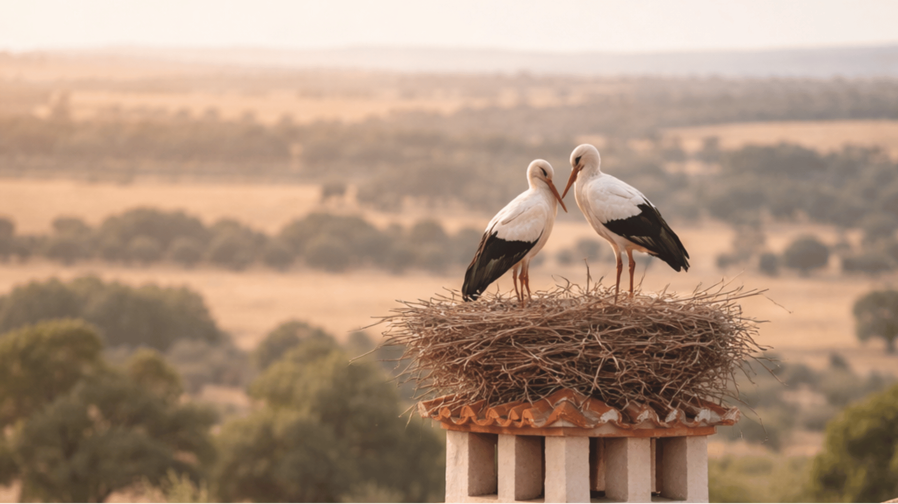
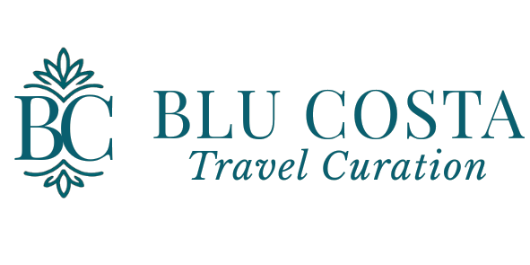
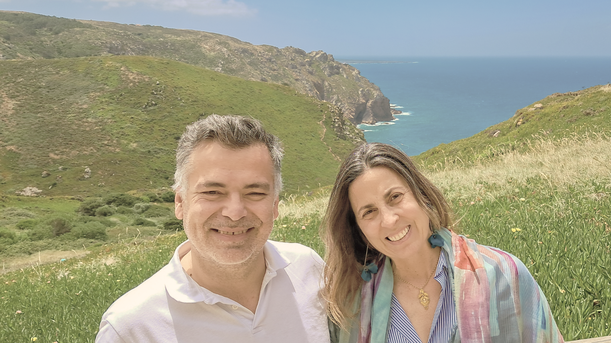

Curation over accumulation
What belongs stays. What adds noise is left behind.


The people behind BLU
Close enough to listen carefully. Experienced enough to know what belongs.

The BLU House
Adriana brings the investigative eye of a travel journalist and the judgment of a curator. She listens for what a guest is truly seeking, then translates it into a journey with direction and meaning.
Tiago, born and raised in Lisbon, brings deep local knowledge, historical perspective and more than a decade of experience guiding guests through the city and beyond.
Your first conversation, the curatorial decisions and the care behind the journey remain close to the people who created BLU.
What guides us
BLU Costa is built around a simple conviction: travel becomes meaningful when places are interpreted with context, paced with care and connected to the people experiencing them.
What belongs stays. What adds noise is left behind.
Stories, people and perspective turn visits into understanding.
Enough time to arrive, notice, feel and remember.
Journeys that make sense—and stay with you